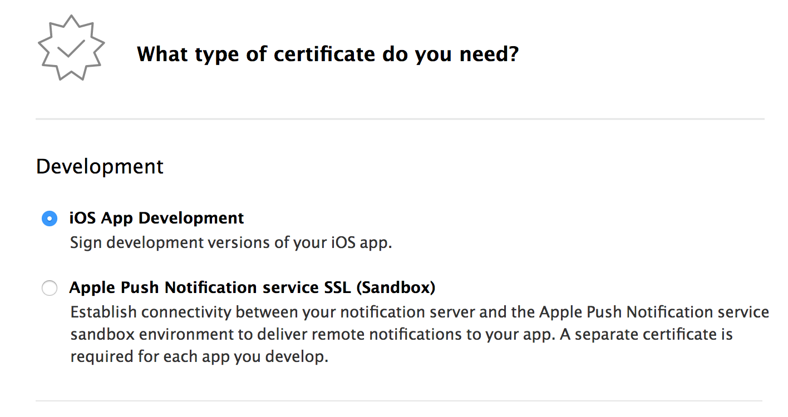
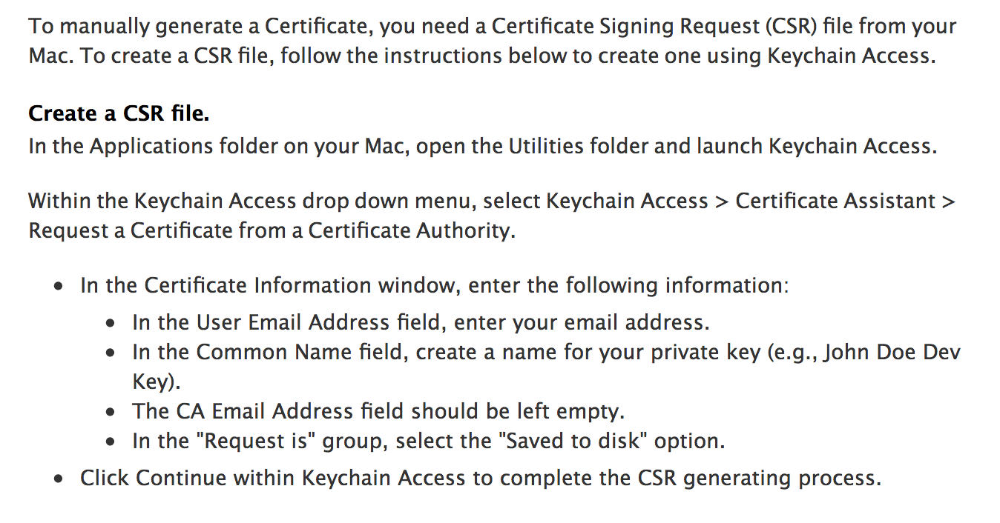
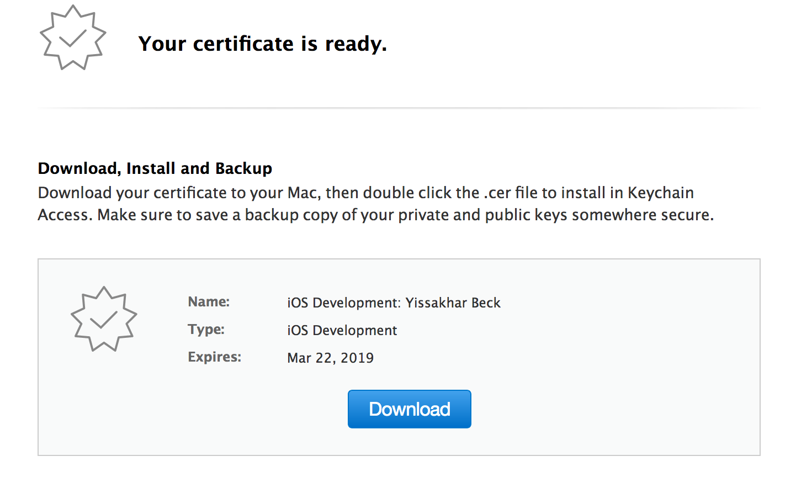
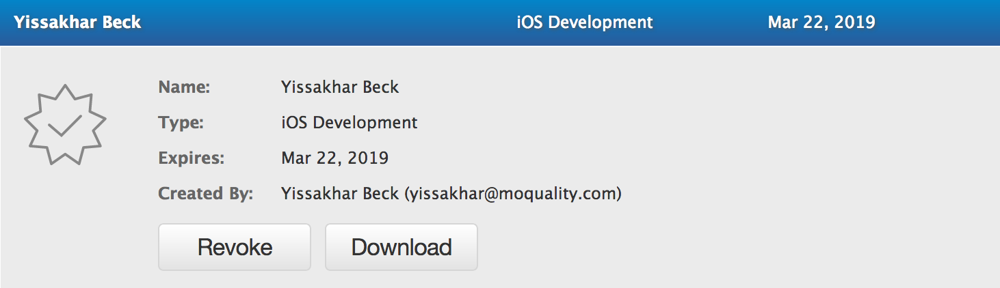
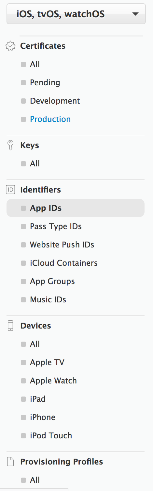

iOS
In order to use the recorder with iOS devices, some configuration is necessary. This page documents that configuration.
Note: These steps were gathered via repeated attempts to determine the code signing process. It is possible that earlier attempts affected the steps determined, meaning that these may not work on a clean setup. Further testing is necessary.
Log in to Apple Developer Portal
First, log into the Apple Developer Portal. Click the Account link at the top of the page to access your account info. In the sidebar on the left, you should see the following links:
Click the "Certificates, IDs & Profiles" link.
If you already have a valid certificate, skip to step 3 (Alternate).
Generate a certificate
Above the certificate list on the next page, click the + button to generate a new certificate.
Select "iOS App Development".

The next page should give you instructions on how to generate a CSR. Follow those instructions before continuing.

Import the certificate
Download the newly generated certificate.

If you already have a certificate generated, navigate to the certificate list, find your certificate, click on it, and then click the download button in the expanded panel.

Once the certificate is downloaded, locate it in Finder and double-click it. This should open the Keychain Access app with the certificate newly imported into the "System" keychain. To find it, click System in the sidebar, and then Certificates.
The certificate needs to be moved to the "local" keychain. To do so, simply drag it from the list of certificates on the local keychain in the sidebar. Once this is done, it should appear under "My Certificates", rather than just under "Certificates".
Generate an App ID
Back in the developer portal, click "App IDs" on the sidebar.

Click the + button at the top, much like when generating a certificate.
Name the ID something reasonable for its use, such as "Recorder".
Select "Wildcard App ID" and enter a single asterisk as the ID.
Take note of the Team ID listed under the "App ID Prefix". You'll need it.
Click "Done".
Generate a mobile provisioning profile
Click "All" under "Provisioning Profiles" in the sidebar. You may need to scroll down to see it.
Click the + button to generate a new profile, and then select "iOS App Development".
Select the App ID that you generated in the previous step.
Select the certificate generated in step 2, or your existing certificate if you did not generate one.
Click the "Select All" checkbox on the device list.
Enter a name for the profile.
You do not need to download the profile. That will be handled automatically.
Set up environment variables
The final step is to set the $DEVELOPMENT_TEAM environment variable to the Team ID from step 4. There are several ways to do this, but one of the simplest is to add the variable to the .bash_profile file in your home directory.
Open the $HOME/.bash_profile file in an editor of your choice and add the following line to the end of it:
bash export DEVELOPMENT_TEAM=<Team ID>
Replace <Team ID> with the your team ID.
Once this is done, you will need to log out and back in. Then simply run the recorder as normal.
Ensure xcode is in system path
Go to Xcode > Preferences > Locations, and assign the Command Line Tools to XCode.